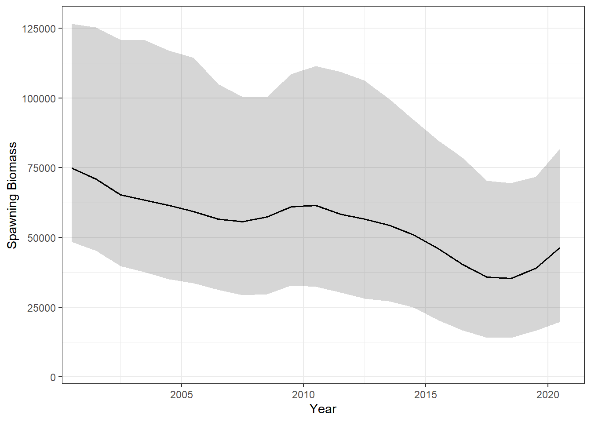
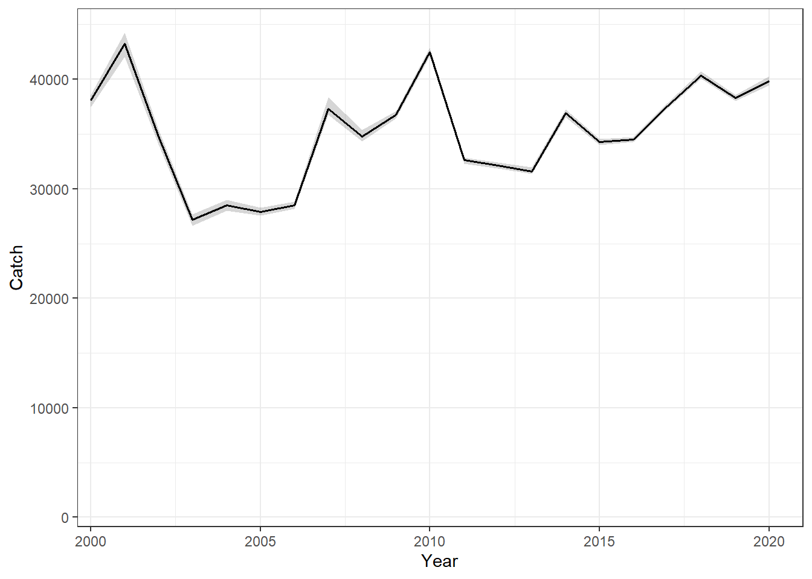

3 Base Case Operating Model
The Base case OM (OM5b) uses the LL1 (NW) CPUE series as the index of abundance as the primary data used in the OM conditioning (see Chapter 2).
3.1 Overview of OM Dynamics
This figures below show the historical dynamics of the Base Case OM: female spawning biomass (Figure 3.1) and total catch summed over stocks and fleets (Figure 3.2).
In each figure, the black line shows the median across simulations and the grey ribbon the 5th–95th percentile interval.

3.2 Comparision with Conditioning Model
The figures below compare the Base Case OM dynamics against the ABC conditioning model across 500 MCMC simulations. In each ribbon plot, the line shows the posterior median and the shaded band the 10th–90th percentile interval; red is the ABC conditioning model and blue is the OM. The ratio plots show OM / ABC for each individual simulation, with the dashed red line at 1 indicating perfect agreement.
3.2.1 Total Numbers


Overall, the OM tracks the conditioning model closely in total numbers (Figure 3.3). The per-simulation ratios (Figure 3.4) show that most simulations remain within 5% of the conditioning model throughout the historical period, with a small number of simulations diverging by greater amounts, particulary towards the end of the time series.
3.2.2 Spawning Biomass


The OM reproduces the SSB trajectory of the conditioning model closely (Figure 3.5), with the median lines nearly indistinguishable across the historical period. The per-simulation ratios (Figure 3.6) mirror the pattern seen in total numbers.
3.2.3 Catch by Fleet


Fleet-specific catches in the OM are slightly lower than in the conditioning model across all fleets (Figure 3.7, Figure 3.8). This is a structural consequence of the Baranov equation attributing a greater proportion of total mortality to natural causes compared to Pope’s approximation, as described in Section 2.3.
3.2.4 Numbers-at-Age

The numbers-at-age comparison (Figure 3.9) provides the a detailed view of where the OM and conditioning model diverge. Deviations are generally small in the early years of the historical period and grow over time as the Baranov vs. Pope’s discrepancy compounds through the population dynamics, with most OM values within ±5% of those from the ABC conditioning model.